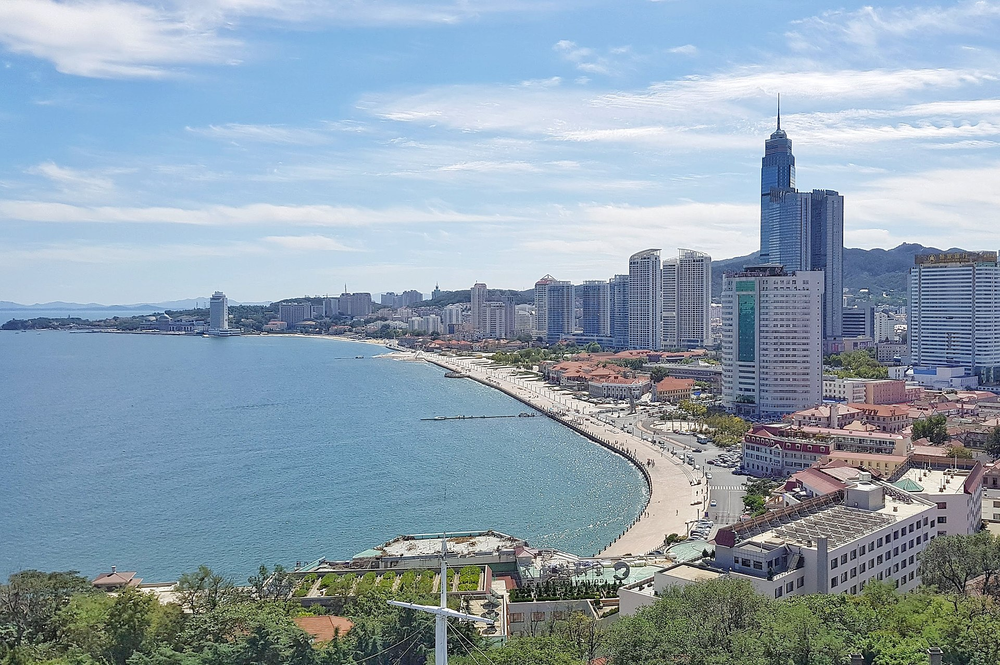

Yantai, a beautiful coastal city in Shandong Province of Eastern China, is well-known for its beautiful beaches, delicious fruits, and exquisite seafood.
Yantai is a place where history and modernity coexist. This coastal city is characterized by its beautiful natural landscape and is known for its many vineyards, including the largest wine production base in Asia. Yantai also has many historical sites and places of interest, including the Yantai Mountain, Changyu Wine Culture Museum, and the Penglai Pavilion, a mystical palace where the eight immortals crossed the sea in Chinese mythology.